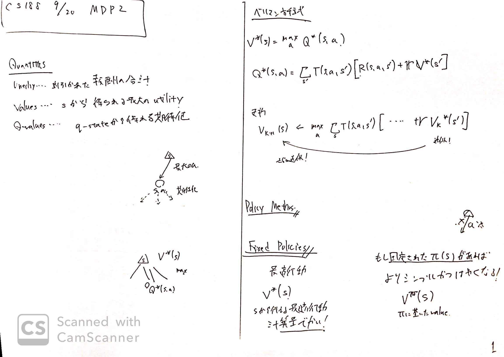
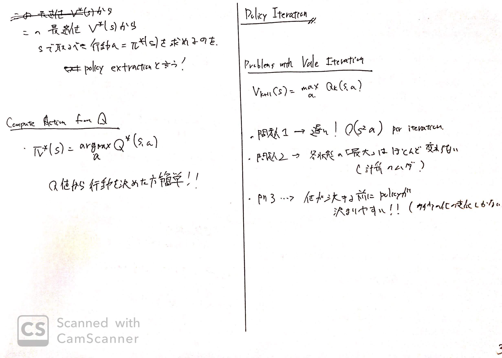

リンク
https://inst.eecs.berkeley.edu/~cs188/fa18/
https://www.youtube.com/watch?v=ZToWj64rxvQ
https://inst.eecs.berkeley.edu/~cs188/fa18/assets/slides/lec9/FA18_cs188_lecture9_MDPs_II_1pp.pdf
画像


内容
復習
utility 割り引かれた合計の報酬
value sから得られる最大のutility
q-value q-stateから得られる期待値(maxを選ぶわけではない)
用語がにているので注意
Fixed Policy
Policyについてこれまで最適しか考えてなかった。
より計算量が小さいものを考えたい。
ここで、固定されたPolicy$\pi(s)$があればよりシンプルに行動できる。
$\pi: S \to A$のように、$\pi$は状態を引数に固定されたアクションを返す。
つまり、ずっと上に動く、右に動くといった個体されたPolicyである。
よって、最適性はない。
しかし、valueの計算式は
$V^{\pi}(s) = \sum_{s’} T(s, \pi (s), s’)[R(s, \pi (s), s’) + \gamma V^{\pi}(s’)]$
となり、Actionの選択が出てこなくなる。($\pi (s)$がアクションを返すので)
よって計算量が軽くなる。
具体的には各iterationごとに$O(s^2)$に改善される。
Policy Extraction
行動するための方針であるPolicyを価値から定めたいことがある。
つまり、今状態$s$にいるとき、同行動すればよいのだろうか？という指標がほしい。
ここで、状態$s$で行うべき最適な行動を返す関数$\pi^{*}$を
$\pi^{*}(s) = argmax_a Q^{*}(s, a)$
とする。つまり、ある行動$a$を決めた時最大の$Q$値が得られるような行動を決めたい！ということである。
できれば、最大の価値が得られるように動きたいのは人間も同じである。
行動を決めたい場合は、Q値を利用すると良い。
Problems with value iteration
$V_{k+1}(s) = max_a Q_k(s, a)$
でValueを更新していく。
しかし、これにはいくつか問題点が存在する。
- 遅い
- ある段階で値が変化しなくなる、つまり最大はだいたい最大である
- policyは意外と早く決まる
Policy Iteration
この問題を解決するために、より早くするために
以下の処理$1, 2$を繰り返し実行することにする。
- Policy Evaluation
- 固定されたPolicy$\pi$で永遠にValue, Utilityを計算し続ける convergenしたら終わり
- $V_{k+1}^{\pi_i} = \sum_{s’}T(s, \pi (s), s’)[R(s, \pi (s), s’) + \gamma V_k^{\pi}(s’)]$
- Policy Improvement
- 計算されたulilityを用いてactionを変えることを試す
- $\pi_{i+1}(s) = argmax_a \sum_{s’}T(s, s’, a)[R(s, a, s’) + V^{\pi_i}(s’)]$
- これは状態sで新たに作られるPolicyは、新しく行動aを決めて、そのときのR(s, a, s’)とEvaluationで求めた$i$における価値の和
となる。
まとめ
MDPでは最適値を求めたいならValue iterationかpolicy iterationを使う。
もし、最適な行動を決めたいならpolicy iterationしよう。